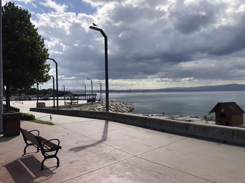
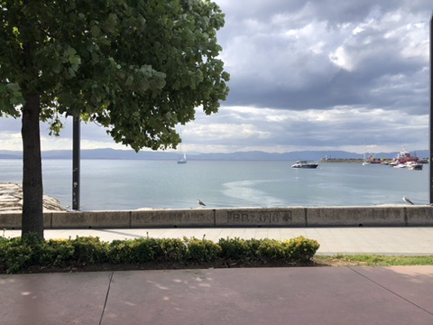

Mahallendeki işletmeleri, ustaları, mağazaları ve mekânları keşfet. Adres, telefon, çalışma saati ve yol tarifiyle.
Bugün Tuzla'da nöbetçi eczanelerBir mahalleye gir, oradaki eczaneyi, kafeyi, diş hekimini kategori kategori gör.
Her kategori haritada kendi rengiyle işaretli. Filtrele, gör, yol tarifini al.

Türkiye'nin en büyük gemi inşa bölgesi Tuzla'da. Ama bu firmalar hiçbir yerel haritada toplu halde yok. Burada var.
Kaynağını söyleyemediğimiz hiçbir kayıt haritada yok.
İşletmelerin isim, konum ve kategori bilgisi OpenStreetMap'ten alındı. ODbL lisansı altında, açık veri.
Tersane ve yat firmaları, Türkiye Gemi İnşa Sanayicileri Birliği'nin kamuya açık üye dizininden derlendi. Adres ve telefonlar birliğin yayınladığı bilgidir.
Hastane, diş hekimi, muayenehane, psikolog, aile sağlığı merkezi ve veteriner kayıtları İBB Açık Veri Portalı'nın sağlık tesisleri veri setinden geldi. İBB Açık Veri Lisansı. Bu set portalda güncellenmiyor, yani anlık bir görüntü.
Çalışma saatiniz, telefonunuz veya konumunuz yanlışsa düzeltelim. Kayıt ücretsiz, bir şey satmıyoruz.